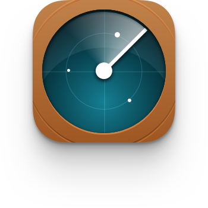
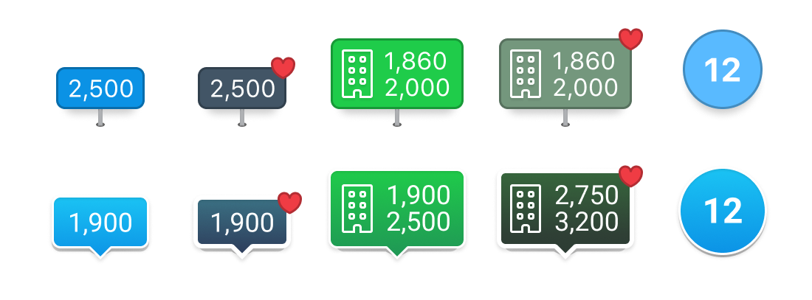
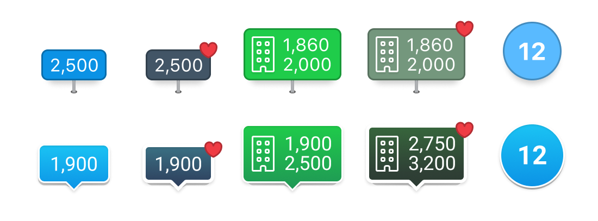
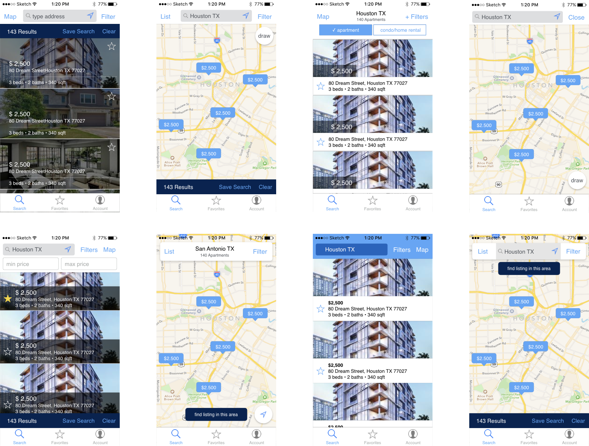
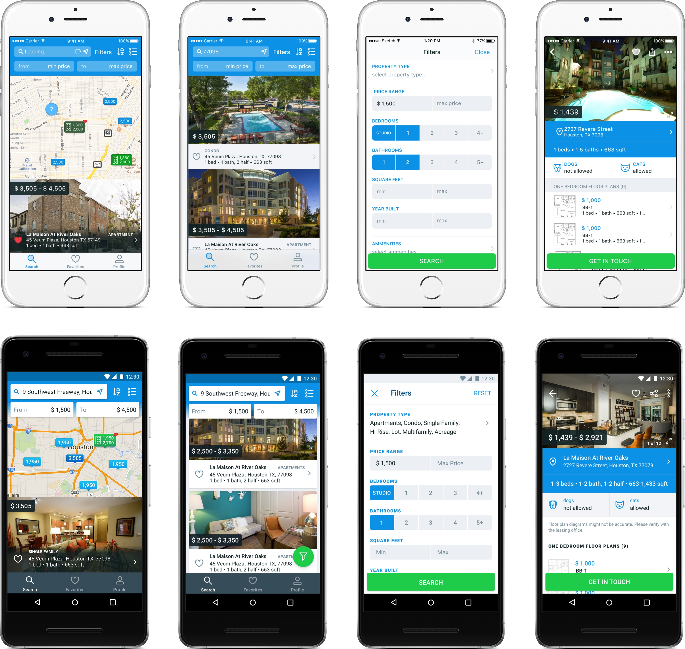
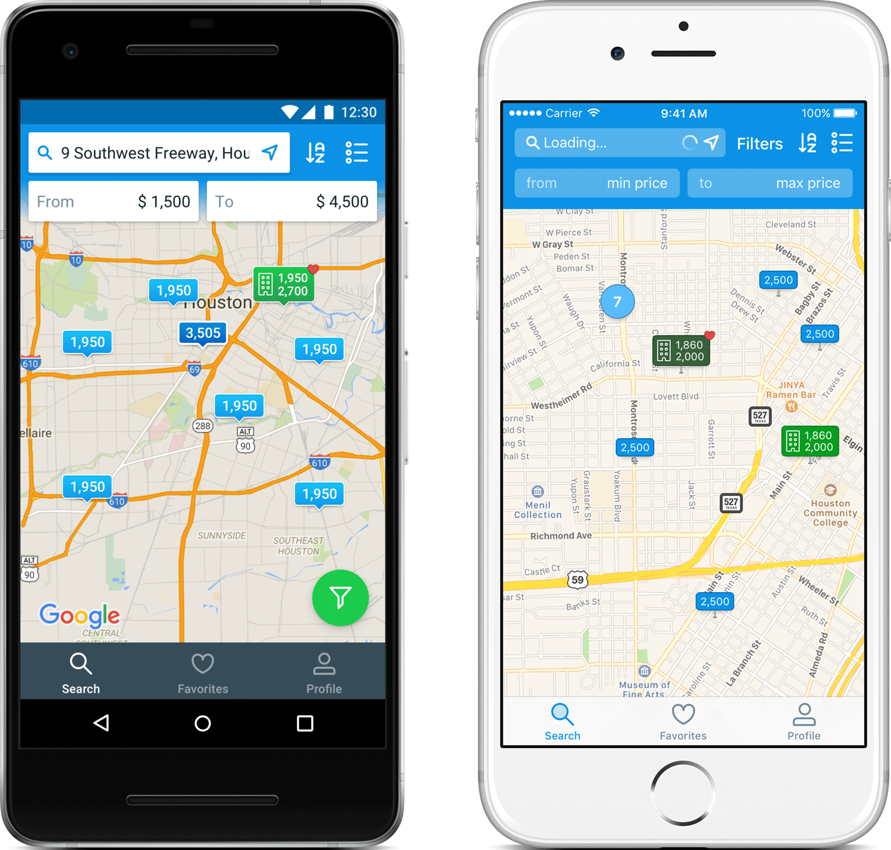
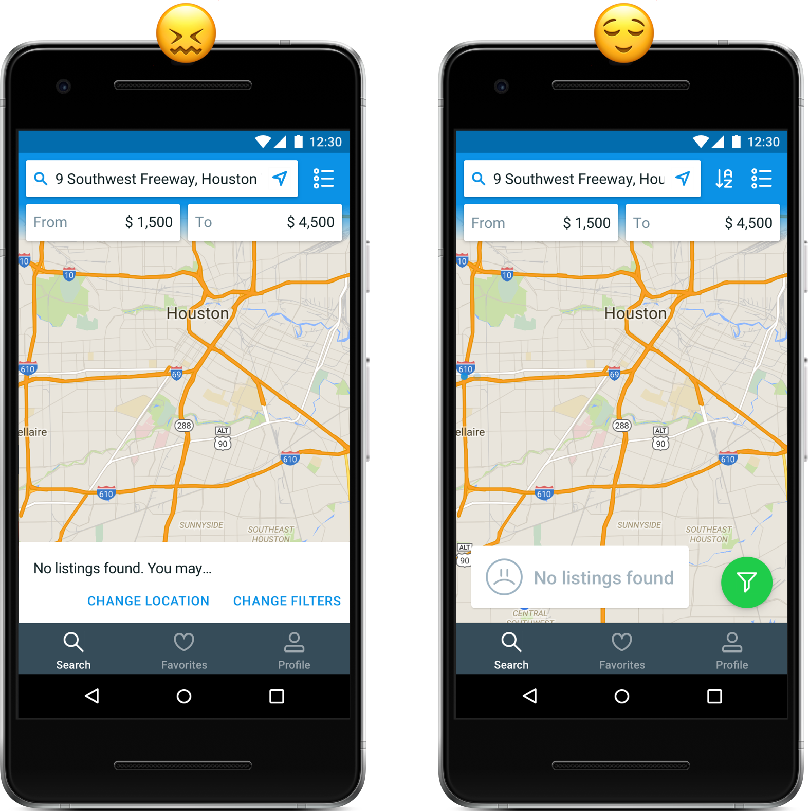
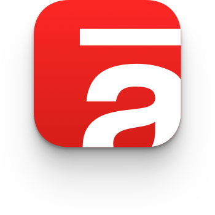
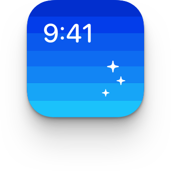

-

The fastest way to find apartments in Texas.
Role: Interaction design, Visual design
Year: 2016
Intro
HAR Rentals that helps users to discover places to rent. With an easy to use interface and specialized filter system, users can find properties ranging from efficiency loft apartments to large, single-family homes, apartments and condominiums. As an interaction designer working remote, I designed an iPhone, Ipad, and Android version in this 2-month project.
 

Rapid Prototyping
I prefer starting out with low-fidelity prototypes before jumping into visuals. That way I'd reduce my bias and focus on making navigation easy to understand. I used Apple Keynote to iterate through the prototyping process. The good thing about this tool is that you can make prototypes look less like a wireframe. Sometimes it's hard for users and stakeholders to know what to do if the mockup doesn't look like something they're used to.
Platform Savvy
We decided it would be the for the project to be platform savvy. Why? Because it'd be faster to implement, and faster for users to understand. But we wanted, for instance, that a couple uses different OSs and share the same experience. So we kept the same information architecture.
Price Filters
One thing data from HAR.com main app and website thought us is that the filters users use the most are price filters. So instead of placing it on the filter screen, I put it on the search screen. It gives users instant reward after changing its values — not the back-and-go we’d have if it were inside the filter modal — without sacrificing much of the map dimensions.
Takeways
“Don’t make the users think” — it should be a mantra. With all of the best intentions, I designed a search empty-state with two buttons that’d facilitate users interaction. I used the same concept for iOS and Android. iOS users did fine, while Android folks got lost. They started to look around to find what to do next. Removing the FAB button was a BAD idea. Users had already used it, they knew what it does. By creating a new interaction for the empty-state, I made users think.
 
-
